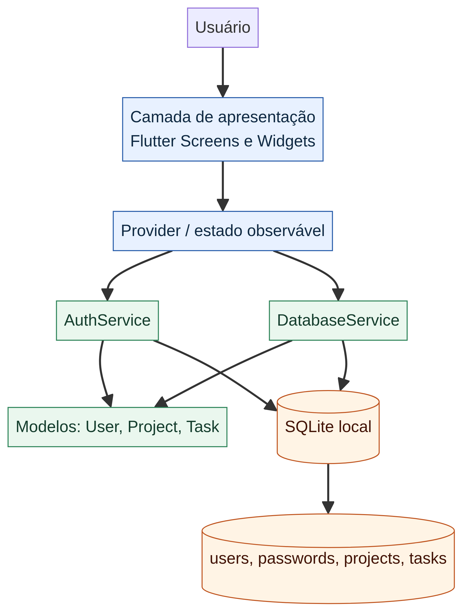

01Arquitetura em camadas
Apresenta o caminho entre usuário, telas Flutter, Provider, serviços, modelos e SQLite. É a imagem de referência para entender onde cada responsabilidade deve ficar.
- Como ler
- Da esquerda para a direita: entrada, estado, serviços, modelos e persistência.
- Componentes
- Apresentação, AuthService, DatabaseService, User, Project, Task e tabelas SQLite.
- Decisão
- Separar UI de persistência reduz acoplamento e facilita testes.
- Requisitos
- RF004, RF005, RF007, RF009, RNF007.